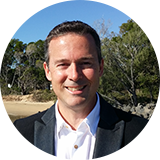

- Atlassian in Seoul 201825th May 2018

About
Atlassian in Seoul 2018
- 'Atlassian in Seoul 2018'이
- 
- 를 품고 여러분을 찾아옵니다.
- 'Atlassian Team Tour'는 전세계 11개 도시를 순방하며 진행되고 있는 Atlassian의 가장 큰 월드 투어입니다.
- 이번 'Atlassian in Seoul 2018'에서는 Team Tour 팀을 초청하여 그 내용을 공유해 드림과 동시에, 지금까지 여러해 행사를 진행하면서 여러분께 받아왔던 피드백에 따라 오시는 분의 역할, Atlassian 도구의 사용 경험 유무로 나누어 Team Practice, Team tools - basic, Team tools - advanced로 트랙을 세분화 했습니다.
오는 5월 25일 (금), Atlassian과 전문 솔루션 파트너들이 준비한 Atlassian in Seoul에서 조직을 한단계 더 발전시킬 수 있는 유익한 아이디어를 얻으시길 바라며, 많은 참여와 성원 부탁드립니다.
Atlassian 한국대표 류윤상 Jason Ryu - About Atlassian Atlassian unleashes the potential of every team. Our collaboration software helps teams organize, discuss and complete shared work. Teams use Atlassian’s project tracking, content creation and sharing, real-time communication and service management products to work better together and deliver quality results on time.
-
Team Practice
주로 IT 또는 Non-IT 기획자, 또는 조직의 일하는 문화 변화에 관심이 있는 분들을 위해
-
Team Tools(Basic)
Atlassian 제품에 대한 기초적인 내용으로, Atlassian제품에 경험이 없는 분들을 위해
-
Team Tools(Advanced)
Atlassian 제품을 현재 사용 중이나, 더 효과적으로 사용하기를 원하는 분들을 위해
Keynote Speakers
-

Scott DavisSolutions Engineer, APAC
Atlassian -

Bernard FergursonR&D Team Coach
Atlassian
Agenda
Atlassian in Seoul 2018
| Team Practice7층 그랜드홀 | Team Tools - Basic6층 그레이스홀 A | Team Tools - Advanced6층 그레이스홀 B | |
|---|---|---|---|
| 9:30 ~ 10:20 | Keynote: How Atlassians are Winning with the Team Playbook (and So Can You!) - Bernard Ferguson | Keynote: Tools and Practices - Scott Davis | |
| 10:20 ~ 10:40 | Open Q&A with Bernard Ferguson | Open Q&A with Scott Davis | |
| 10:40 ~ 10:50 | Bio Break | ||
| 10:50 ~ 11:40 | Keynote: Tools and Practices - Scott Davis | Keynote: How Atlassians are Winning with the Team Playbook (and So Can You!) - Bernard Ferguson | |
| 11:40 ~ 12:00 | Open Q&A with Scott Davis | Open Q&A with Bernard Ferguson | |
| 12:00 ~ 1:00 | Lunch & Networking | ||
| 1:00 ~ 1:50 | Breakout Session P-1: 당신의 팀은 노동환경 변화에 얼마나 효과적으로 대응하고 있습니까? - 오픈소스컨설팅 | Breakout Session TB-1: Jira Service Desk 개요 - 한국정보컨설팅 | Breakout Session TA-1: Jira Service Desk를 활용한 ITSM (IT Service Management) - 인프라웨어 테크놀러지 |
| 1:50 ~ 2:40 | Breakout Session P-2: CMMI 기반 환경의 애자일 - 투씨드 | Breakout Session TB-2: Confluence 는 어떻게 쓰나요? - 모우소프트 | Breakout Session TA-2: Confluence 100배 활용하기 - 커브 |
| 2:40 ~ 3:10 | Coffee Break | ||
| 3:10 ~ 4:00 | Breakout Session P-3: The CALMS Framework for DevOps - 커브 | Breakout Session TB-3: Jira Software를 활용하여 생산성을 높이기 - 모우소프트 | Breakout Session TA-3: Atlassian 기능 확장과 구축 사례 (애드온 개발 등) - 한국정보컨설팅 |
| 4:00 ~ 4:50 | Breakout Session P-4: 작은 규모를 위한 Scrum과 Enterprise를 위한 SAFe - 모우소프트 | Breakout Session TB-4: Atlassian 제품 기반의 DevOps 구성 - 투씨드 | Breakout Session TA-4: 200명 이하 개발조직의 DevOps 구현 사례 - 오픈소스컨설팅 |
| 4:50 ~ 5:00 | Bio Break and Fireside Q&A Prep | ||
| 5:00 ~ 5:30 | Fireside Q&A - Practices | Fireside Q&A - Team Tools - Basic | Fireside Q&A - Team Tools - Advanced |


Information
- •본 행사는 무료이며, 좌석이 한정되어 있으니 반드시 사전등록을 해주시기 바랍니다.
- •사전등록 후 행사 당일 주차권을 지참하신 100대에 한해 선착순으로 주차권 제공합니다.
- •행사 문의: 010-6698-6265 / atlassian@ableing.com